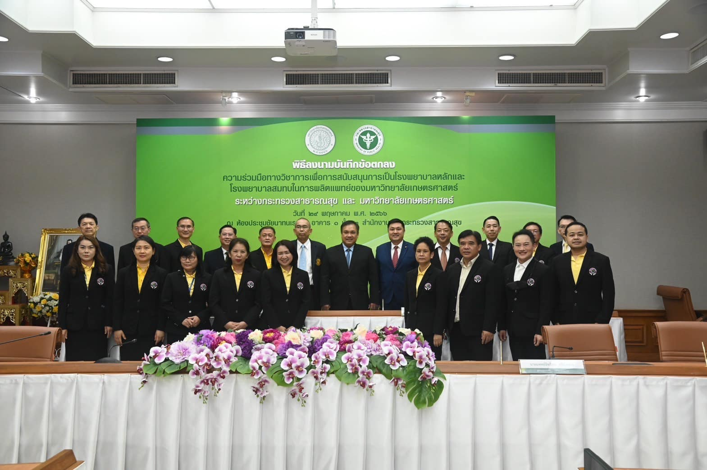
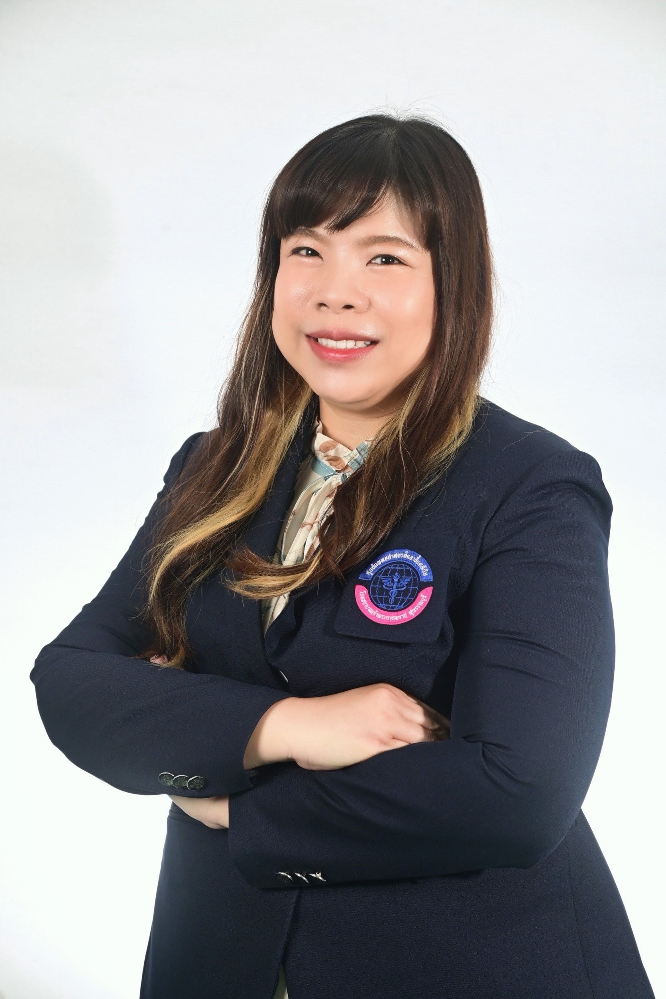
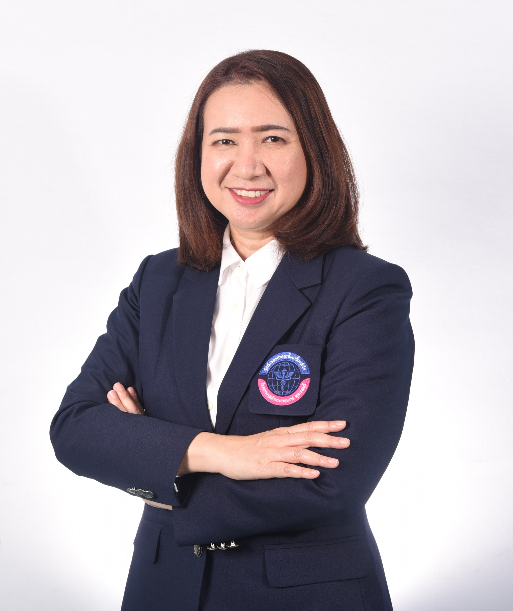
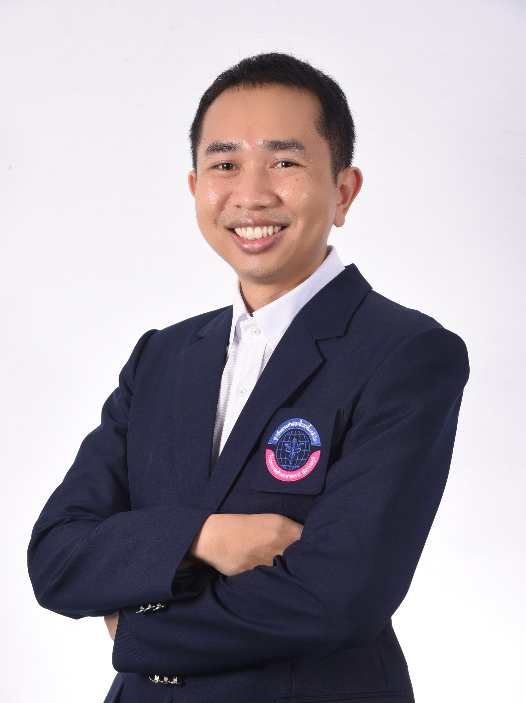
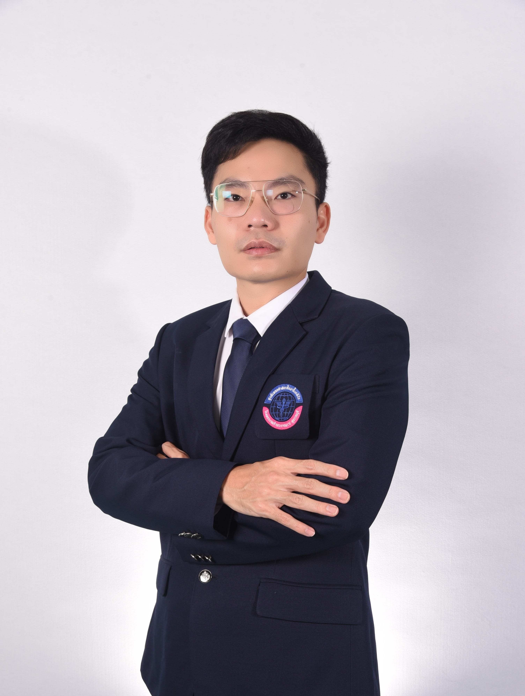

ประวัติความเป็นมา
ศูนย์แพทยศาสตร์ศึกษาชั้นคลินิก โรงพยาบาลเจ้าพระยายมราช สุพรรณบุรี จัดตั้งขึ้นเพื่อจัดการเรียนการสอนชั้นคลินิกให้แก่นิสิตนักศึกษาแพทย์ ตามที่กระทรวงสาธารณสุขและมหาวิทยาลัยเกษตรศาสตร์ ได้ลงนามบันทึกข้อตกลงความร่วมมือทางวิชาการเพื่อสนับสนุนให้โรงพยาบาลเจ้าพระยายมราช จังหวัดสุพรรณบุรี เป็นโรงพยาบาลหลักในการผลิตแพทย์ ของมหาวิทยาลัยเกษตรศาสตร์ จึงได้มีการจัดตั้งศูนย์แพทยศาสตรศึกษาชั้นคลินิก โรงพยาบาลเจ้าพระยายมราช จังหวัดสุพรรณบุรี
ในปี พ.ศ. 2567 โรงพยาบาลเจ้าพระยายมราช จังหวัดสุพรรณบุรี เป็นโรงพยาบาลศูนย์ขนาดใหญ่ที่มีศักยภาพ ทั้งทางด้านบุคลากรและทรัพยากรทางการแพทย์ มีความหลากหลายของผู้ป่วยที่เข้ารับการรักษา เหมาะสมต่อการเรียนรู้ของนิสิต โรงพยาบาลเจ้าพระยายมราช จังหวัดสุพรรณบุรี จึงมีความพร้อมในการทำหน้าที่เป็นโรงพยาบาลร่วมสอนหลักแก่นิสิตแพทย์ ของมหาวิทยาลัยเกษตรศาสตร์

วิสัยทัศน์ (Vision)
เป็นศูนย์แพทยศาสตรศึกษาชั้นคลินิกตามมาตรฐานแพทยสภา โดยเน้นการศึกษาในรูปแบบให้ผู้เรียนสร้างองค์ความรู้ด้วยตนเอง
พันธกิจ (Mission)
- 1. ผลิตบัณฑิตแพทย์ที่ยึดมั่นในจรรยาบรรณวิชาชีพและความรู้ตามมาตรฐานแพทยสภา
- 2. สร้างสิ่งแวดล้อมให้เพียบพร้อมด้วยวิชาการ ที่เอื้อให้ผู้เรียนเป็นผู้สร้างองค์ความรู้ด้วยตนเองตามทฤษฎีประกอบสร้างนิยม (Constructivism) อย่างมีความสุข
- 3. พัฒนาหลักสูตร รูปแบบและผลลัพธ์การเรียนรู้ การวัดและการประเมินผลการศึกษา การประกันคุณภาพให้เป็นไปตามมาตรฐานแพทยสภา
คณะผู้บริหาร
ศูนย์แพทยศาสตร์ศึกษาชั้นคลินิก โรงพยาบาลเจ้าพระยายมราช

พญ.พัชรพรรณ ศรีขวัญเจริญ
รองผู้อำนวยการศูนย์แพทย์ฯ
ด้านวัดและประเมินผล

พญ.ชลธิศ นาคา
ผู้อำนวยการศูนย์แพทยศาสตร์ศึกษาชั้นคลินิก

นพ.ก้าวหน้า สุขสุขะโน
รองผู้อำนวยการศูนย์แพทย์ฯ ด้านประกันคุณภาพการศึกษาและเทคโนโลยีสารสนเทศ

นพ.วีรภัทร พาพันธุ์เรือง
รองผู้อำนวยการศูนย์แพทย์ฯ
ด้านวิชาการ

พญ.รติกร อนุสรทนาวัฒน์
รองผู้อำนวยการศูนย์แพทย์ฯ
ด้านงานวิจัย

นพ.ณัฏฐ์ เกียรติอภิวสุ
รองผู้อำนวยการศูนย์แพทย์ฯ
ด้านกิจการนิสิต

พญ.วรางคณา ชัยสงคราม
รองผู้อำนวยการศูนย์แพทย์ฯ
ด้านพัฒนาอาจารย์และบุคลากร
บุคลากรสายสนับสนุน
ศูนย์แพทยศาสตร์ศึกษาชั้นคลินิก โรงพยาบาลเจ้าพระยายมราช
อมรรัตน์ แก้วโกมล
นักวิชาการศึกษา
ทิภารัตน์ เกิดการบุญ
เจ้าหน้าที่บริหารงานทั่วไป